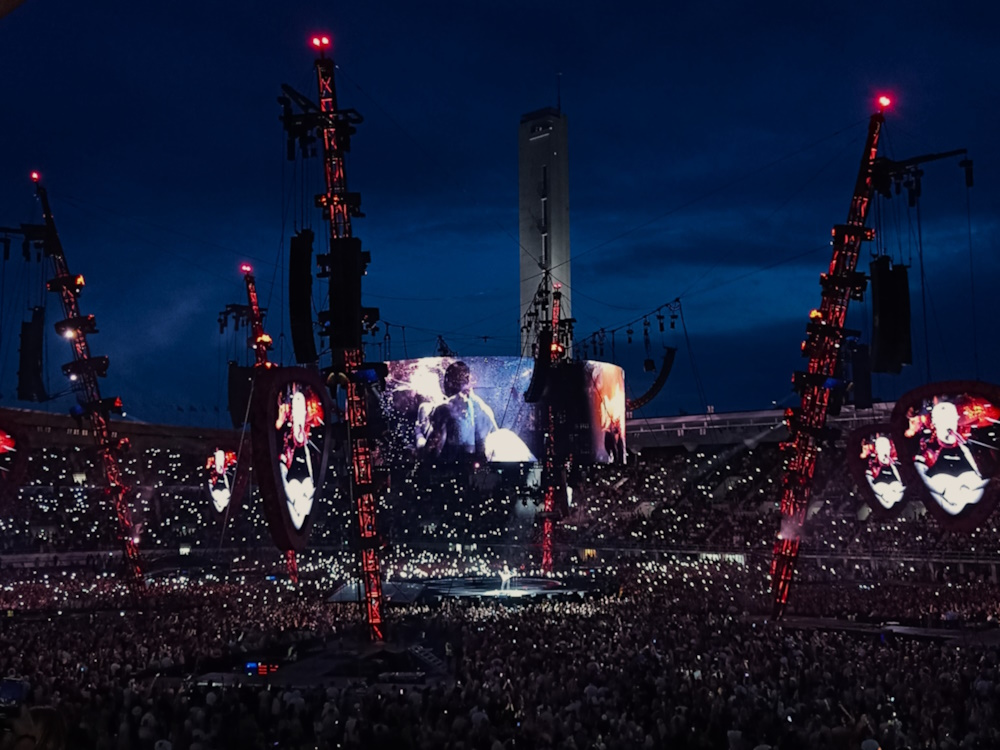
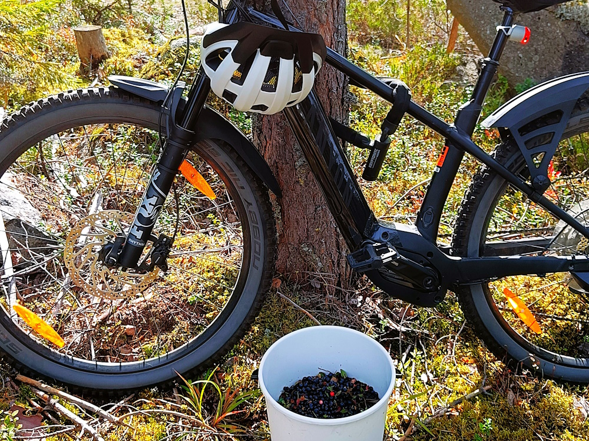
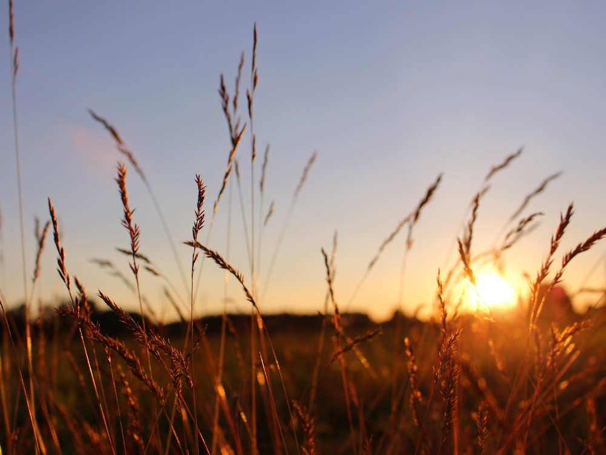
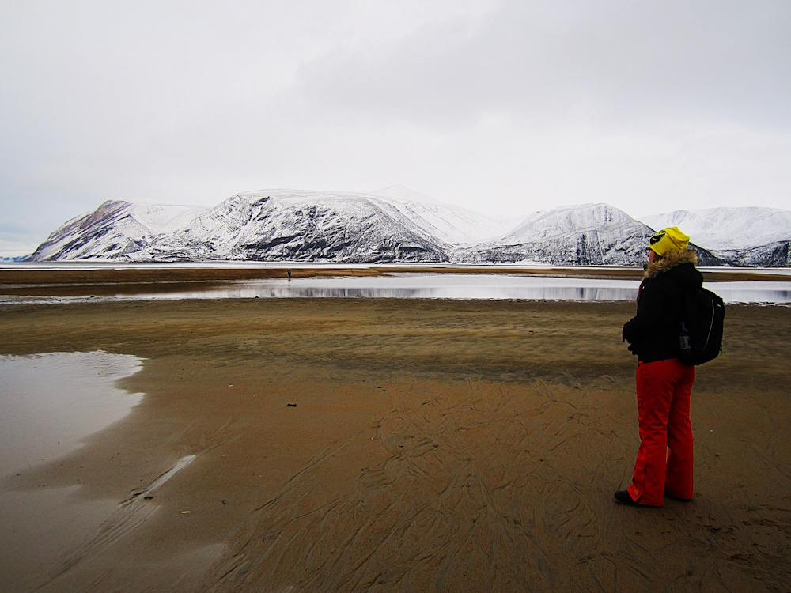

Harrastukset
Vapaa-ajallani harrastan kuntosalillä käymistä, lenkkeilyä ja pyöräilyä. Päivittäiseen tekemiseen kuuluu myös lukeminen ja laajan musiikkikirjon kuunteleminen. Käyn satunnaisesti konserteissa, luontoretkeilemässä ja valokuvailemassa. Tykkään myös pelata lautapelejä aina silloin tällöin.



